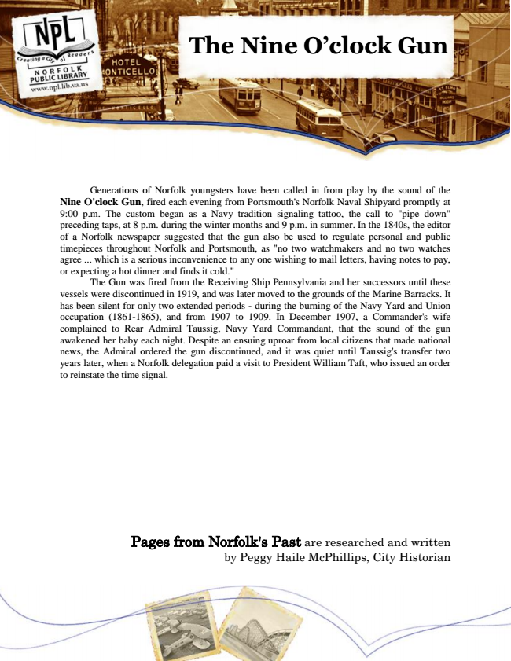

The Nine O’clock Gun
Generations of Norfolk youngsters have been called in from play by the sound of the Nine O'clock Gun, fired each evening from Portsmouth's Norfolk Naval Shipyard promptly at 9:00 p.m. The custom began as a Navy tradition signaling tattoo, the call to "pipe down" preceding taps, at 8 p.m. during the winter months and 9 p.m. in summer. In the 1840s, the editor of a Norfolk newspaper suggested that the gun also be used to regulate personal and public timepieces throughout Norfolk and Portsmouth, as "no two watchmakers and no two watches agree ... which is a serious inconvenience to any one wishing to mail letters, having notes to pay, or expecting a hot dinner and finds it cold."
The Gun was fired from the Receiving Ship Pennsylvania and her successors until these vessels were discontinued in 1919, and was later moved to the grounds of the Marine Barracks. It has been silent for only two extended periods - during the burning of the Navy Yard and Union occupation (1861-1865), and from 1907 to 1909. In December 1907, a Commander's wife complained to Rear Admiral Taussig, Navy Yard Commandant, that the sound of the gun awakened her baby each night. Despite an ensuing uproar from local citizens that made national news, the Admiral ordered the gun discontinued, and it was quiet until Taussig's transfer two years later, when a Norfolk delegation paid a visit to President William Taft, who issued an order to reinstate the time signal.
Pages from Norfolk's Past are researched and written by Peggy Haile McPhillips, City Historian